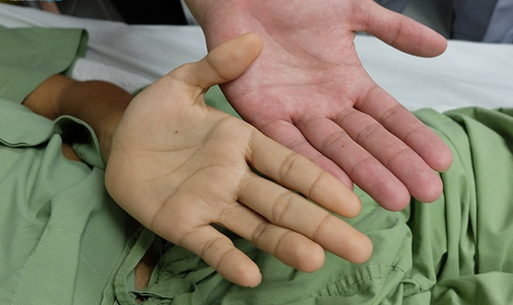

VIÊM GAN A: NGUYÊN NHÂN, DẤU HIỆU VÀ CÁCH ĐIỀU TRỊ
Cập nhật ngày 26 tháng 2 năm 2022
Viêm gan A là một trong những loại viêm gan siêu vi phổ biến trên thế giới, với tỷ lệ mắc bệnh cao ở các nước có thu nhập thấp, trung bình. Đối tượng mắc bệnh hầu hết là trẻ nhỏ hơn 10 tuổi (90%). Tại Việt Nam, bệnh xuất hiện rải rác, tập trung ở khu vực Tây Nguyên và những nơi có điều kiện vệ sinh kém. Theo BS.CKI Huỳnh Văn Trung, viêm gan A chủ yếu lây nhiễm qua đường tiêu hóa (đường phân-miệng). Virus thông qua các thực phẩm ô nhiễm xâm nhập vào bên trong cơ thể, theo máu đến gan, gây nhiễm trùng và hình thành nhiều triệu chứng khó chịu cho người bệnh
1. Viêm gan A là gì?
Viêm gan A (viêm gan siêu vi A) là bệnh nhiễm trùng gan cấp tính do virus viêm gan A (HAV) gây ra. Bệnh khiến các tế bào biểu mô gan bị tổn thương, làm ảnh hưởng đến hoạt động và chức năng gan.
Theo Tổ chức Y tế Thế giới (WHO), mỗi năm trên thế giới có khoảng 1,4 triệu trường hợp mắc viêm gan A. Dạng viêm gan này rất dễ lây lan qua thức ăn hoặc nguồn nước bị ô nhiễm. Hầu hết người mắc viêm gan A đều hồi phục sau vài tháng và không để lại bất cứ vấn đề sức khỏe nghiêm trọng nào.
2.Triệu chứng bệnh viêm gan A

Các dấu hiệu và triệu chứng viêm gan A thường xuất hiện đột ngột, sau khi người bệnh bị nhiễm virus từ 2 – 4 tuần. Chúng có thể bao gồm:
- Mệt mỏi: Hoạt động của gan bị suy giảm, các chất độc không được đào thải đúng cách khiến cơ thể trở nên uể oải, mệt mỏi và khó chịu.
- Rối loạn tiêu hóa: Nhiễm trùng gan làm ảnh hưởng đến hoạt động của hệ tiêu hóa, dẫn đến tình trạng buồn nôn hoặc nôn, chán ăn, ăn không ngon miệng, tiêu chảy, đau bụng hoặc khó chịu ở vùng bụng phía trên bên phải…
- Sốt nhẹ: Nếu người bệnh bị sốt nhẹ và kéo dài thì nên đi khám để kiểm tra xem liệu mình có bị nhiễm virus HAV hay không.
- Biểu hiện ngoài da: Vàng da, vàng mắt là triệu chứng điển hình khi mắc phải tình trạng viêm gan siêu vi. Mức độ vàng da, vàng mắt tùy thuộc mức độ tổn thương gan. Bệnh nhân có thể ngứa da khi vàng da tắc mật nặng.
- Nước tiểu màu vàng đậm; phân nhạt, chuyển màu xám xỉn: Sự thay đổi nồng độ bilirubin máu cũng ảnh hưởng đến màu sắc của nước tiểu và phân.
- Đau cơ, khớp: Triệu chứng này khá ít gặp (chỉ chiếm khoảng 10%) nhưng lại thường là dấu hiệu cho thấy bệnh diễn biến nặng, phức tạp, cần được khám và điều trị kịp thời.
Không phải tất cả những ai nhiễm bệnh cũng đều biểu hiện các triệu chứng trên. Người lớn thường có các triệu chứng rõ ràng hơn trẻ em. Chỉ khoảng 10% trẻ nhỏ dưới 6 tuổi bị nhiễm virus viêm gan A có biểu hiện vàng da, trong khi đó, tỷ lệ các trường hợp bị vàng da ở trẻ lớn và người lớn nhiễm bệnh lên đến hơn 70%.
Các triệu chứng của viêm gan A thường biến mất sau vài tuần. Tuy nhiên, cũng có trường hợp tình trạng nhiễm trùng trở nên nặng hơn, kéo dài đến vài tháng hoặc dẫn đến biến chứng nguy hiểm.
3. Nguyên nhân gây bệnh và con đường lây truyền virus viêm gan A
Nguyên nhân gây viêm gan A là do virus viêm gan A xâm nhập vào tế bào gan và gây viêm. Căn bệnh này có liên quan mật thiết đến vấn đề vệ sinh cá nhân, vệ sinh thực phẩm và vệ sinh môi trường. Theo bác sĩ Trung, virus gây bệnh có thể sống hàng tháng trong môi trường ô nhiễm, do đó, các khu vực có điều kiện vệ sinh và thực hành vệ sinh kém có tỷ lệ người nhiễm virus viêm gan A là rất cao.
4. Con đường lây truyền virus viêm gan A
Con đường lây lan chủ yếu của virus viêm gan A là qua đường tiêu hóa (đường phân – miệng), tức là ăn phải thức ăn hoặc sử dụng nước uống có chứa virus. Bên cạnh đó, loại virus này cũng có thể lây nhiễm khi tiếp xúc gần gũi (quan hệ tình dục miệng-hậu môn) với người bị nhiễm bệnh. Cụ thể, một số trường hợp có thể làm lây lan virus như sau:
- Ăn thức ăn không đảm bảo vệ sinh, người chế biến bị nhiễm virus viêm gan A hoặc không tuân thủ quy trình rửa tay đúng cách trước khi chạm vào thức ăn
- Ăn sống các loại động vật có vỏ (tôm, cua, sò, ốc…) từ nguồn nước bị ô nhiễm
- Sử dụng nguồn nước nhiễm virus viêm gan A
- Ăn chung, dùng chung đồ dùng cá nhân (vật dụng ăn uống, khăn, bàn chải đánh răng …) với người mắc bệnh viêm gan A.
- Quan hệ tình dục với người bị nhiễm virus.
Ngoài ra, virus cũng có thể lây truyền qua đường máu, tuy nhiên khả năng lây lan theo cách này là rất thấp vì có rất ít virus viêm gan A tồn tại trong máu người bệnh.
5.Điều trị bệnh viêm gan A
Hiện nay vẫn chưa có phương pháp điều trị đặc hiệu cho bệnh viêm gan A. Nếu nghĩ rằng mình đã tiếp xúc với virus viêm gan A, người bệnh nên đến gặp bác sĩ ngay để tiến hành tiêm vắc xin hoặc globulin miễn dịch viêm gan A để ngăn ngừa sự phát triển của bệnh. Lưu ý rằng cách này chỉ phát huy hiệu quả khi người bệnh tiêm vắc xin sớm ngay sau khi tiếp xúc với virus (trong vòng 2 tuần).
Việc điều trị viêm gan A chủ yếu tập trung vào giảm thiểu các triệu chứng khó chịu do bệnh gây ra. Cơ thể sẽ tự loại bỏ virus, đa số người bệnh sẽ khỏi bệnh và phục hồi trong vòng 6 tháng sau khi nhiễm bệnh.
Bác sĩ khuyên người bệnh viêm gan A nên chú ý những vấn đề sau:
- Tập trung nghỉ ngơi: Người bị nhiễm viêm gan A thường cảm thấy mệt mỏi, ốm yếu và ít năng lượng hơn. Do đó, bệnh nhân nên nghỉ ngơi nhiều cho đến khi cơ thể cảm thấy tốt hơn.
- Chăm sóc làn da: Một số người bị viêm gan A cảm thấy ngứa ngáy ngoài da dữ dội. Để hạn chế tình trạng này, bệnh nhân nên giữ nhà cửa thoáng mát, mặc quần áo rộng rãi và không tắm nước quá nóng.
- Nạp đủ calo cho cơ thể: Người bệnh có thể cảm thấy chán ăn, ăn không ngon. Để vẫn đảm bảo cung cấp đủ chất dinh dưỡng, người bệnh nên chọn các loại thực phẩm chứa nhiều calo. Người bệnh cũng có thể uống nước ép trái cây hoặc sữa thay cho nước lọc.
- Ăn nhiều bữa nhỏ: Chia khẩu phần ăn thành nhiều bữa nhỏ thay vì các bữa lớn sẽ giúp bạn tiêu hóa dễ dàng hơn, giảm cảm giác buồn nôn, khó chịu.
- Tránh uống rượu và sử dụng thuốc cẩn thận: Lá gan đang bị viêm có thể gặp khó khăn trong việc xử lý thuốc và rượu. Do đó, người bệnh viêm gan A không nên uống rượu, đồng thời thông báo với bác sĩ về tất cả các loại thuốc đang sử dụng, bao gồm cả các loại thuốc không kê đơn.
Bên cạnh đó, trong quá trình sinh hoạt hàng ngày, người bệnh cũng cần thực hiện các biện pháp để giảm nguy cơ lây truyền virus viêm gan A cho người khác:
- Tránh quan hệ tình dục: Người bệnh viêm gan A cần tránh tất cả các hoạt động tình dục để hạn chế nguy cơ lây nhiễm cho đối phương. Việc sử dụng bao cao su không đem lại hiệu quả phòng tránh lây nhiễm đối với căn bệnh này.
- Rửa sạch tay sau khi đi vệ sinh: Rửa tay sạch sẽ theo đúng quy trình 6 bước của Bộ y tế không chỉ giúp ngăn ngừa lây nhiễm viêm gan A mà còn bảo vệ người bệnh khỏi nhiều căn bệnh nguy hiểm khác.
- Không chuẩn bị thức ăn cho người khác: Người bệnh dễ dàng lây truyền virus HAV trong quá trình chế biến thức ăn. Do đó, bệnh nhân không nên làm điều này cho đến khi tình trạng viêm nhiễm hoàn toàn được chữa khỏi.
Phòng bệnh viêm gan A
Cách tốt nhất để phòng bệnh viêm gan A là tiêm phòng vắc xin viêm gan A. Vắc xin viêm gan A thường được tiêm hai mũi. Mũi thứ hai được tiêm nhắc lại sau mũi đầu 6 – 12 tháng. Vắc xin được khuyến nghị cho các đối tượng sau:
- Tất cả trẻ em từ 1 tuổi trở lên
- Người làm việc hoặc đi du lịch ở những nơi có tỷ lệ viêm gan A cao
- Trong gia đình có người nhiễm HAV
- Nhân viên phòng thí nghiệm có thể tiếp xúc với virus viêm gan siêu vi A
Ngoài ra, để hạn chế khả năng lây nhiễm viêm gan A, bạn cũng nên:
- Rửa tay kỹ bằng xà phòng và nước ấm trước khi ăn uống và sau khi đi vệ sinh
- Ăn chín, uống sôi, hạn chế ăn ngoài
- Tự gọt vỏ và rửa sạch tất cả các loại trái cây và rau quả tươi trước khi ăn.